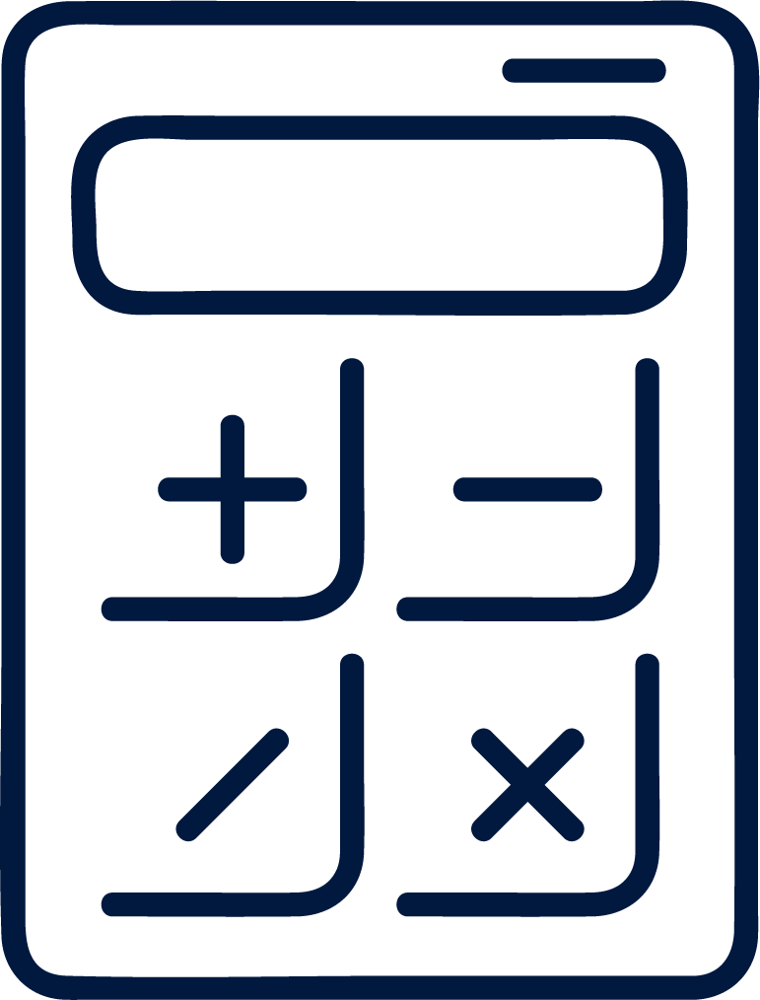
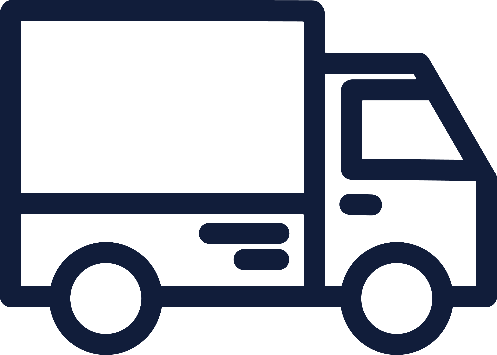
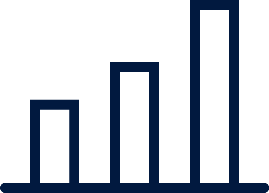

廃棄物管理BPOサービスの特徴
地域別に管理されている貴社の廃棄物処理の業者管理
を一元化し、業務効率化、コストの適正化、ESG経営
の促進を貴社の廃棄物担当に代わって実現します
店舗の一元管理で業務の負荷を低減
処理費用・環境負荷の適正化を実現

適切なコンプライアンス体制の実現
サービス提供イメージ
当社開発の廃棄物管理システム「ゴミカン」を通じて、貴社（本部／各拠点）からの
廃棄物に関わる業務を全て代行。
貴社は「依頼・承認・データ確認」のみを行うのみでOK。
(本部)
 ゴミカン
ゴミカン
請求
承認
データ確認
マニフェスト、請求
配車調整、マニフェスト交付
承認
データ確認
「ゴミカン」で実現する機能
ゴミカンのクラウドシステム上で一連の業務プロセスがすべて完結

マイページから見積の閲覧可能。電話やメール等のコミュニケーションを省略。
コンプライアンスを遵守した電子契約をオンラインで締結。

電話・メール不要。システム上で回収依頼とスケジュール調整が完結。

マニフェストはJW-NETと自動連携し、回収・処分状況をリアルタイムで監視。
排出実績に基づく請求書を自動アップロード。複数の支払い方法に対応。
提供サービス
基本サービス
運用・管理代行
オプションサービス(個別PJTとしてご提案)
導入プロセス

貴社の各拠点の廃棄物処理状況、契約群の分析し、数店舗の
実地調査と廃棄・収集状況の確認を行います。

調査・評価に基づき、貴社にとって最適な計画を行い、導入
による具体的な定量メリット（試算結果）の提示をいたします。
貴社と同意した計画・契約に基づいたサービスの提供、月次
の数量や管理状況の報告、状況に応じた契約の見直しなどの提案をいたします。